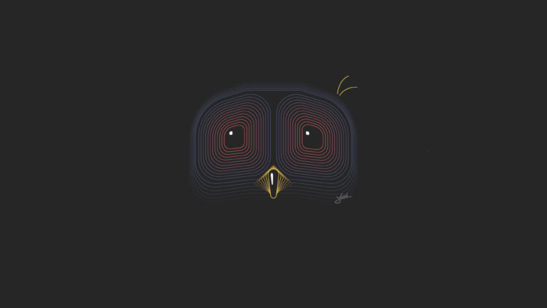
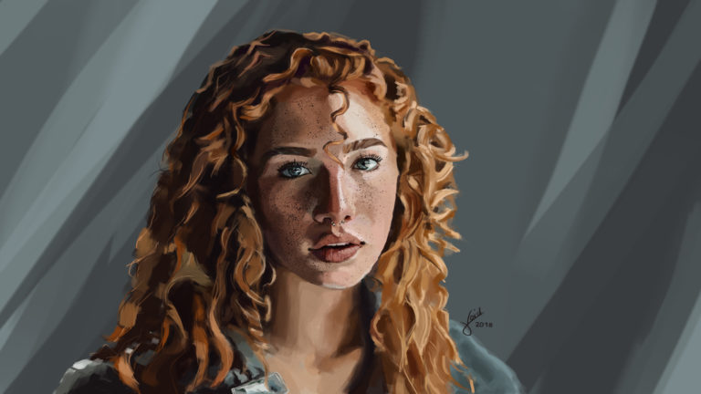
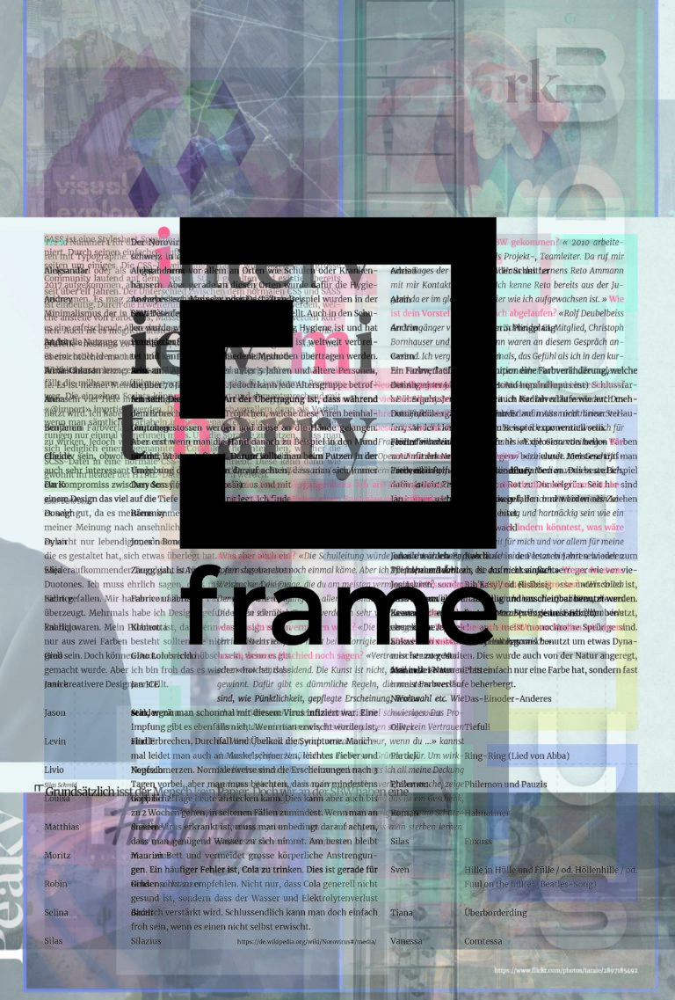
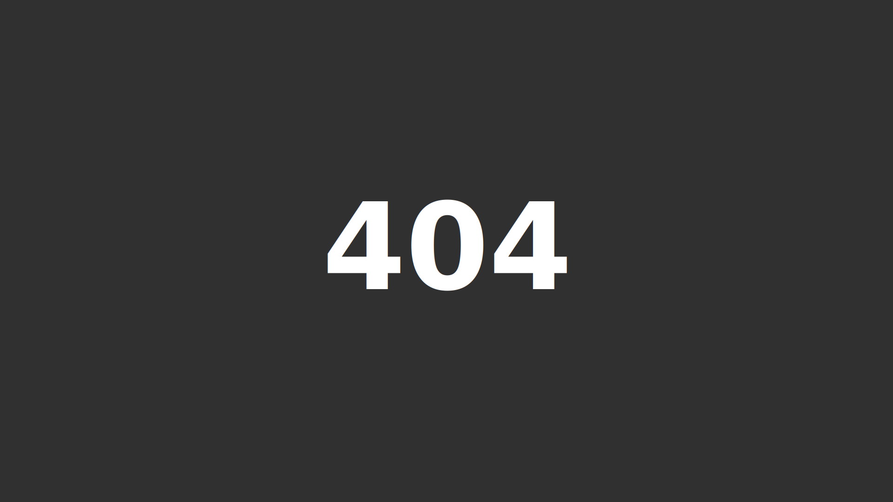
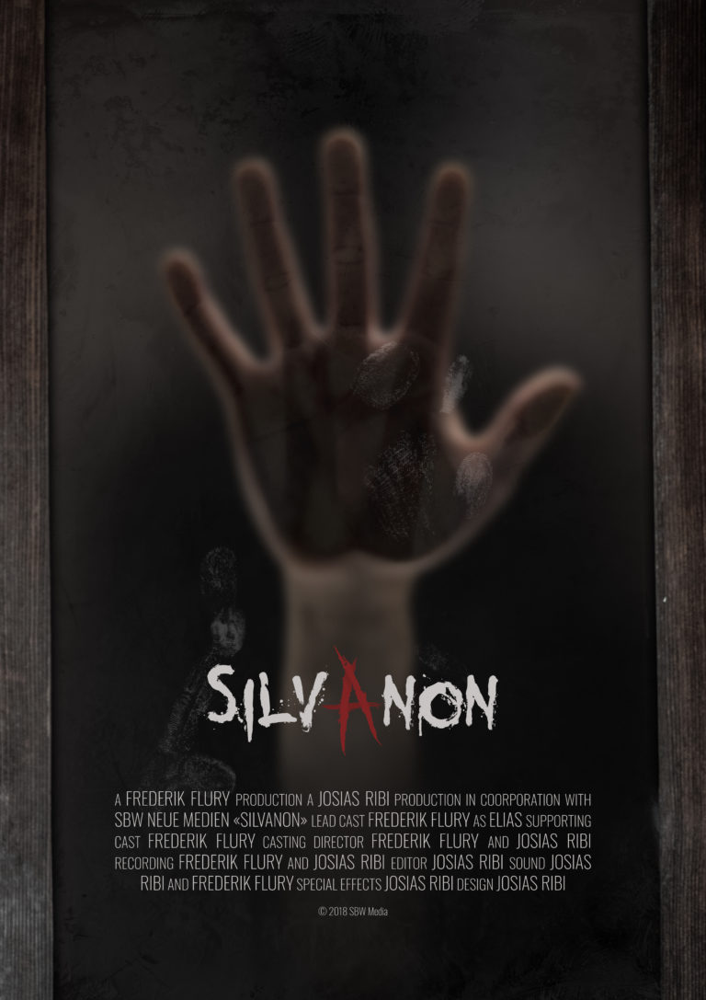

Home
About
Work
Contact
23.11.2019
Current state
1
22.3.2019
Webdesign: SC Romanshorn
2

9.2.2019
Abstract Illustrations
3

30.11.2018
Digital Portrait Painting
4
12.6.2018
ToDo Web App
5

Frame Magazine
6
18.5.2018
Waiting Short Film
7

2.5.2018
Wallpapers
8

4.4.2018
Silvanon Movie Poster
9
1
2
»